Firebase will help us to enhance the development of our Android, IOS, web, Unity games applications.
It appeared in 2014 and is owned by Google, since then it has been improving and adding new features.
This platform will provide us with different services, such as authentication (Google, Twitter, Apple, own users), analytics services, cloud storage, hosting, databases, etc.
Google firebase services
One of the main features of firebase is that initially everything is free, that is, we can use its services for free up to a certain limit.
This limit in general is quite high, and by the time we pass it, the application will surely start to do well and give us some benefit.
You can get more information about their prices here
Pricing
For example, we can see that in Authentication we can log 10,000 users per month. At the time we spend we will pay for use.
On the other hand, in the documentation section (https://firebase.google.com/docs/guides ),
which is very good, it gives us information on how to integrate it into the various platforms.
Accessing firebase
To access firebase, we will have to log in with our Google account and press go to console.
Once we are in the console we will create a new project and follow each of the instructions.
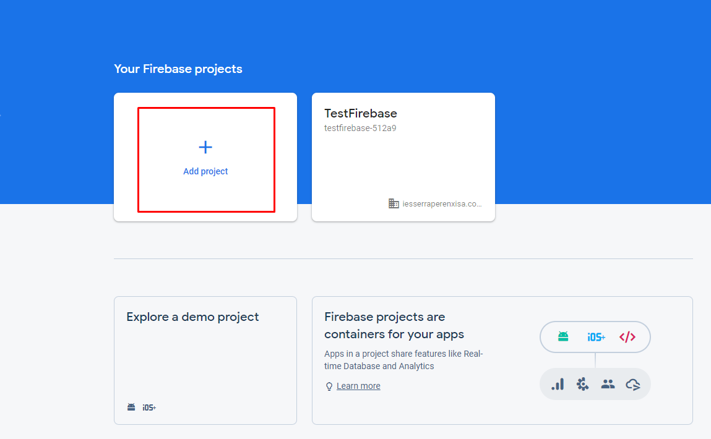 Add project
We give it a name to identify the project, if it already exists it will create another name for us. We press continue.
Project Name
On the next screen it tells us if we want to leave the analytics enabled, in this case we say yes and press continue.
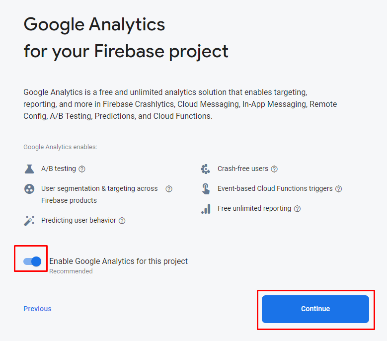 Enable Google Analytics
On the next screen we create a new account for analytics. And we fill in the location data and accept the terms and conditions. Click on create project.
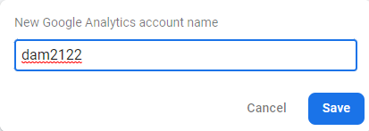
We wait a few seconds for our project to be created.
Creating Project
We press continue and we already have our console ready.
On the left, the main services that we will have to integrate one by one and on the central screen, our project.
Integrating Firebase to our App
Once our App is created in Android Studio, we go to the Firebase console and add an app to get started. In our case it will be an Android App.
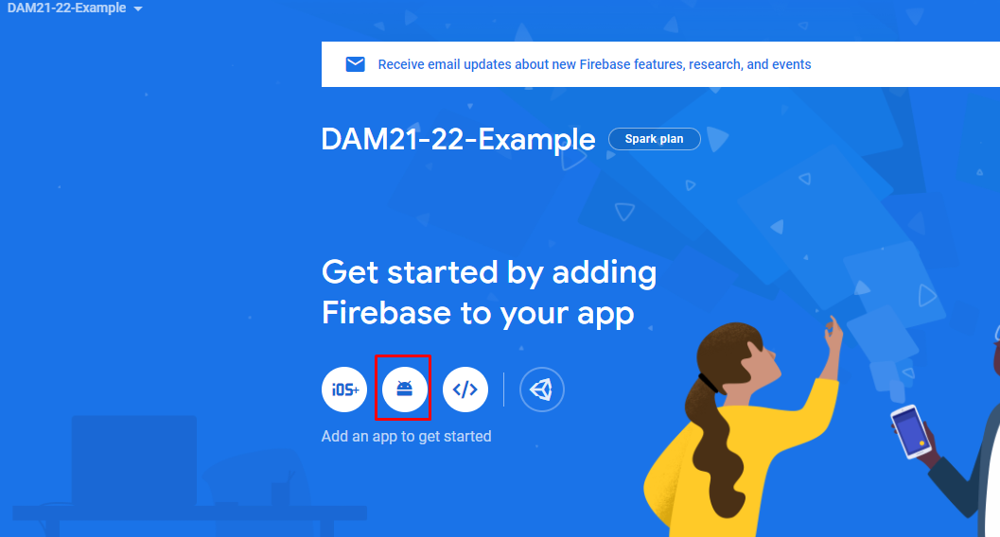 Adding App to Firebase
As we did with the maps, it asks us for the name of the package, and the SHA-1.
Remember that you can get the SHA-1 using the signingReport gradle command
We fill in the data and press to register the App.
This will generate a JSON file called google-services.json that we must save inside the apps
folder of our project, as indicated in the instructions.
To make it better switch Android Studio to Project view. Once saved, click next.
google-services.json
The next step is to add the firebase dependencies. For this we follow the instructions.
First in the project gradle we check that we have the Google() repository and add the dependency to google services.
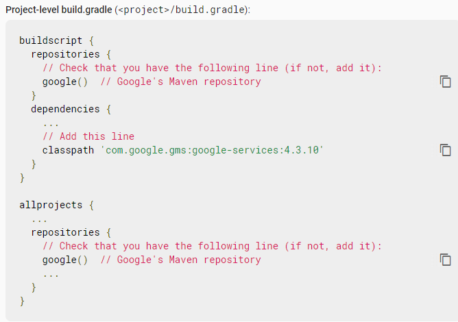 Build.gradle Project
Now it's the turn of the App module's gradle:app file.
We must add the google services plugin and the dependencies that it indicates
plugins {
id 'com.android.application'
id 'kotlin-android'
id 'com.google.gms.google-services'
}
.....
dependencies {
........
// Import the Firebase BoM
implementation platform('com.google.firebase:firebase-bom:29.0.4')
// Add the dependency for the Firebase SDK for Google Analytics
// When using the BoM, don't specify versions in Firebase dependencies
implementation 'com.google.firebase:firebase-analytics-ktx'
// Add the dependencies for any other desired Firebase products
// https://firebase.google.com/docs/android/setup#available-libraries
}
Remember to hit sync.
Returning to the firebase console, we press next and it shows us links with examples and documentation and the button to return to the console.
According to the documentation, for the integration to be carried out, it is better to uninstall the app if we had it installed and reinstall it again.
Once we have the integration done, it should appear in our console. And if we go to the Analytics dashboard we will see the information that appears,
number of users, where they do it from, platform, etc...
We can also launch custom events for parts of our application, for example we are going to make it send us an event every time the Main activity is created.
//If we want to launch our own events to Google Analytics we can do it as follows
//According to Firebase, it can take up to 24 hours from integration for the first events to start appearing.
val analytics: FirebaseAnalytics = FirebaseAnalytics.getInstance(this)
val bundle=Bundle().apply {
putString("message", "Firebase integration completed")
}
analytics.logEvent("InitScreen",bundle)
Then, within Analytics in the events section we can see these events in detail.
Authentication
Within the authentication service we can see that we have different options to do it, such as username and password, Google, Facebook, etc...
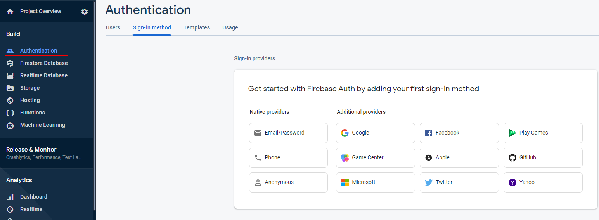
If we click on the Users tab, we will see the users that we have authenticated, in this case it is empty.
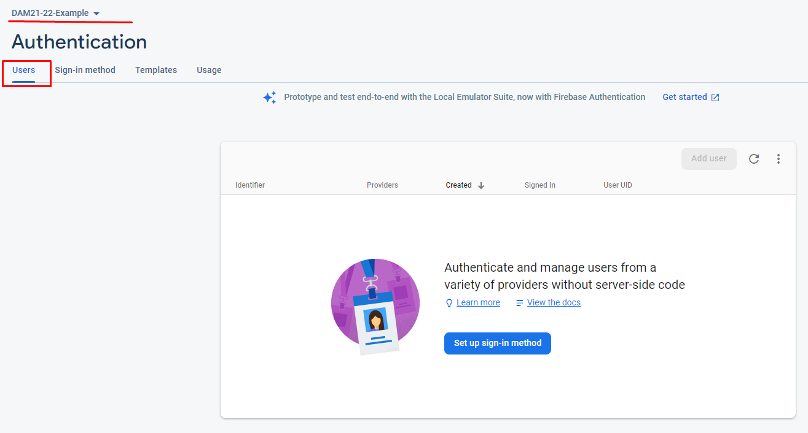
For reasons of time, we will only see two of them:
Email and password
Google
Email and Password
The first thing we will do is enable the email and password provider.
We enable it. We see that we also have the option to enable email without a password. We press save and we already have the creator provider.
Email/Password provider
So far everything we have to do in the firebase console. Let's go back to Android Studio.
We add the dependency in Gradle:app if we haven't already done so.
To register we first get the FirebaseAuth instance with the FirebaseAuth.getInstance() method
Later with the instance we can call the method createUserWithEmailAndPassword(email:String, password:String) to which, as you can see, the email and password are passed.
FirebaseAuth.getInstance().createUserWithEmailAndPassword(
"carlos@gmail.com",
"123456" //Note that password needs at least 6 characters
)
In addition we can add some listener like for example addOnCompletListener, which will fire when the registration is finished.
It will return a Task . This has the isSuccessful property that informs us in a Boolean
if the registration has gone well.
The registry code would be as follows.
FirebaseAuth.getInstance().createUserWithEmailAndPassword(
"carlos@gmail.com",
"123456" //Note that password needs at least 6 characters
).addOnCompleteListener{
if(it.isSuccessful){ // Register completed ok
//do something
//we can't get the user and his email
Log.d(TAG, it.result?.user?.email ?: "")
}else{ //Something was wrong
//showError()
}
}
Once registered, we can see the access from the firebase console.
As you can see we can also add users from the firebase console.
Sign in
To access with an existing user, the procedure is very similar.
Now you just have to call the signInWithEmailAndPassword() method from the instance, which also receives two text strings, email and password.
FirebaseAuth.getInstance().signInWithEmailAndPassword(
"carlos@gmail.com",
"123456" //Note that password needs at least 6 characters
).addOnCompleteListener{
if(it.isSuccessful){ // Register completed ok
//do something
//we can't get the user and his email
Log.d(TAG, it.result?.user?.email ?: "")
}else{ //Something was wrong
//showError()
}
}
Using Google Account
To add access with Google, we must add a new Authentication Provider. Remember for this provider we require the SHA-1 in until now it was optional.
/figcaption>
Click on Google and give it to enable and save. Additionally we can add a support email.
So far everything we have to do in the firebase console. Let's go back to Android Studio.
This process is a bit more complicated than the previous one, but basically the steps to follow are:
First add the dependency in gradle:app
//Firebase google
implementation 'com.google.android.gms:play-services-auth:20.0.1'
Already in the code, we must create the Google configuration with the data we need from the Google user.
In this case, we must pass the client ID of our server to the requestIdToken method of the google-services.json file and ask for the email.
val googleConf = GoogleSignInOptions.Builder(GoogleSignInOptions.DEFAULT_SIGN_IN)
.requestIdToken(getString(R.string.default_web_client_id))
.requestEmail()
.build()
Obtain our Google client to log in to which we pass the previous configuration and context.
val googleClient = GoogleSignIn.getClient(this, googleConf)
We launch the activity to indicate with which account we want to access or create a new one.
This activity is already created, we simply get the intent from the Google Client and launch it.
val signInIntent = googleClient.signInIntent
launcher.launch(signInIntent)
We launch it with registerForActivityResult , since it remembers that it is precated. And we get the Google Account Activity result.
private val launcher = registerForActivityResult(ActivityResultContracts.StartActivityForResult()){ result ->
if (result.resultCode == Activity.RESULT_OK) {
//If the result was OK we have to sign in with those credentials
}
If the result has gone well, first we get the intent of the Google login activity.
val task = GoogleSignIn.getSignedInAccountFromIntent(result.data)
We get the account. Eye This operation can throw an ApiException, we must catch it in a try catch block
try{
val account = task.getResult(ApiException::class.java)
if(account!=null){
//Here we have a valid Google Account
}
}catch (apiException:ApiException){
//showError
}
With the account we obtain your credentials.
val credential = GoogleAuthProvider.getCredential(account.idToken, null)
And with firebase and these credentials we call the signInWithCredential(credential) method to sign in.
The rest is the same as validation via email/password. It would stay like this.
private val launcher = registerForActivityResult(ActivityResultContracts.StartActivityForResult()){ result ->
if (result.resultCode == Activity.RESULT_OK) {
val task = GoogleSignIn.getSignedInAccountFromIntent(result.data)
try{
val account = task.getResult(ApiException::class.java)
if(account!=null){
val credential = GoogleAuthProvider.getCredential(account.idToken, null)
FirebaseAuth.getInstance().signInWithCredential(credential).addOnCompleteListener{
if(it.isSuccessful){
//Here we have access with that account and we can't get some data such us email.
Log.d(TAG, account.email ?: "")
}else{
showError()
}
}
}
}catch (apiException:ApiException){
//showError()
}
}
}
Now we can access with a Google account.
We check that we have accessed with that account in the firebase console.
Exercise: Add some more authentication method, with Github or Facebook. In their respective pages you have more information about the authentication API.
Push Notifications
Configure the App for notifications
First, in the gradle:app file we add the corresponding dependency
We create the class MyFirebaseMessagingService that will extend from FirebaseMessagingService
class MyFirebaseMessagingService: FirebaseMessagingService() {
}
Sending notifications from the firebase console
First we access the firebase console and access the notification service called Cloud Messaging .
Cloud Messaging
Click on send the first message.
Send your first message
We fill in the fields of the notification. We press next.
In point two we select the recipients. We select all android devices that have the application.
The next point is to indicate when we want to send it, we choose now, but we could program a date and time.
We leave conversion events and other options blank as these are more advanced settings. Finally we can save or review it.
We click on review.
And click on Publish.
And we see that the notification arrives on our device. If we click on it, it automatically opens our App.
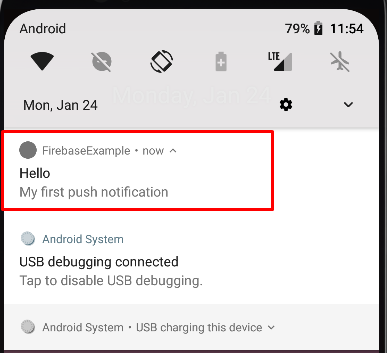
We can also change the notification icon for it in the AndroidManifest.xml we add the following lines. This is optional.
<!-- Set custom default icon. This is used when no icon is set for incoming notification messages.
See README(https://goo.gl/l4GJaQ) for more. -->
<meta-data
android:name="com.google.firebase.messaging.default_notification_icon"
android:resource="@drawable/ic_stat_ic_notification" />
<!-- Set color used with incoming notification messages. This is used when no color is set for the incoming
notification message. See README(https://goo.gl/6BKBk7) for more. -->
<meta-data
android:name="com.google.firebase.messaging.default_notification_color"
android:resource="@color/colorAccent" />
Sending Unicast Notifications
If we want to send a notification to a single device, what we must do is the following.
First we must obtain the user token (unique for each device) to send.
FirebaseMessaging.getInstance().token.addOnCompleteListener(OnCompleteListener { task ->
if (!task.isSuccessful) {
Log.w(TAG, "Fetching FCM registration token failed", task.exception)
return@OnCompleteListener
}
// Get new FCM registration token
val token = task.result
// Log and toast
val msg = "${getString(R.string.msg_token_fmt)} $token"
Log.d(TAG, msg)
//Toast.makeText(baseContext, msg, Toast.LENGTH_SHORT).show()
})
We can copy it from the one we have sent to the console.
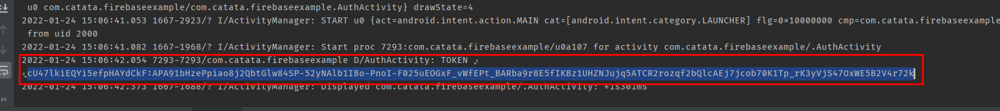
With this token we can send the notification to this device. We could, for example, save the Token in a database and relate it to the user and each time we want to send a notification, retrieve the Token.
We are now going to send a new notification from the firebase console. We select new notification.
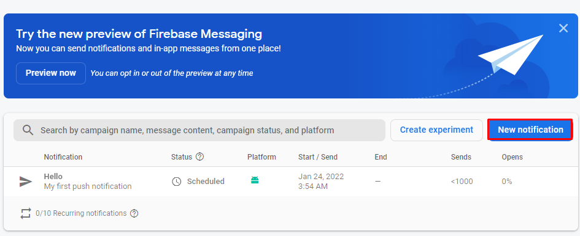
We follow the same steps as before but at point 1 we choose to send test messages.
And in the Token field we add the Token that we have previously obtained. And click on Test.
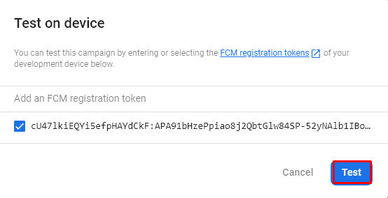
We already have the exclusive notification for this user (device).
Sending Multicast
If instead of wanting to send to all devices or to just one, we use the topics (Topics).
To subscribe a device to a topic is very simple, we just have to execute the following command.
And to send them is very simple. We first start up two devices that subscribe to the same topic.
We go to the Firebase console and send the same message, but in step 2 (Target) we select the Topic.
We see that it already recognizes it for us because when launching the application we have registered it.
We review the message.
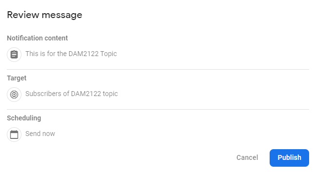
We launched it and it reaches us on both devices.
Foreground Notifications
The notifications only arrive if it is in the background, to handle these notifications we will do it from the service that we created in the first point.
We must override the onMessageReceived() operation on our MyFirebaseMessagingService class .
For example we will launch a Toast with the title of the message.
Notice that we launch it from a coroutine with Dispatcher.Main .
Send information in the notification
To do this, we launch the notification as we have done so far, but we stop at the last option, Additional options.
We see that we can write a key-value pair, we put for example the url of the notes.
Now we retrieve it from the notification.
//Receive info from notification
val url = intent.getStringExtra("url")
url?.let{
println("We've received this url $it in the notification")
}
We get the notification
And by clicking on it we retrieve the information.
So far what we will see regarding notifications, but remember that the normal thing is to send notifications from a server or through firebase functions.
There is documentation on the firebase website to integrate notifications into our server, as well as the use of firebase functions.
Google Crashlytics
It will allow us to obtain information and statistics of our errors or bugs to be able to solve them.
To activate it, go to the Release & Monitor section and select Crashlytics .
Once this is done, we must follow the steps of integrating crashlytics in our application.
We open the build.gradle:app of our project and add the dependency.
We run our app and check in the console that the integration has been successful.
Here we can select the operating system of the App in our Android case, and start seeing the information it provides us.
We can filter by the type of errors of our App, by default it shows those of the blocking type, which are the worst errors they can give us, since the user experience is impaired.
They are unexpected closures when executing certain code. It will help us to detect errors in users who have downloaded and installed our App and that we have not been able to detect when doing it.
We have a failure statistic.
At the bottom we will see the list of errors. Let's force a bug to test crashlytics. To do this, we will first create a forced error button.
By pressing this button we launch an uncontrolled exception that will make the App stop.
If we launch the application and force the error, it stops.
Crashlytics nos indica hasta que fichero y línea ha fallado.
We can add information about the user who was logged in when the error occurred, as well as some extra information, in this case the provider the user was using.
//we send the user that is getting the error.
FirebaseCrashlytics.getInstance().setUserId(email)
//We can set customs key. In this case we can know which is the user provider when the app crashes
FirebaseCrashlytics.getInstance().setCustomKey(PROVIDER,provider)
We can use the user's information to notify you that the App is already operational, apologize for the inconvenience, etc.
We can also use crashlytics as a log, to send information about what caused the error.
FirebaseCrashlytics.getInstance().log("ForceError Button has been pressed")
Firebase Remote Config
Many times making changes to our apps forces us to deploy a new version in the store.
We are going to see how to save different configuration parameters in the cloud on a remote server in a very simple and, above all, free way.
This service that will allow us to save and update different values of different parameters in the cloud, being able to consult those values
from our app without having to upload a new update to the app store
We are going to activate it from Remote Config in the side menu of the firebase console.
With the remote configuration, we are going to do, for example, change the text of the force error button, decide if we want it to be shown or not.
We could also define urls or even save json files, etc.
Let's go to the console to define these configurations, which will be key-value
The other parameter will be the button text. Finally we give you to publish changes.
Once the remote configuration is created, we are going to use it in our App.
To do this, the first thing we will do is add the dependency in build.gradle:app.
Now in the main activity (AuthActivity) we will create the configuration, this will be a default configuration, in case our App is not able to connect to the Internet.
We can also set how often we want to refresh this configuration. By default they are every 12 hours.
//Remote config
val fireRemoteConfig = FirebaseRemoteConfig.getInstance()
val configSettings = FirebaseRemoteConfigSettings.Builder()
.setMinimumFetchIntervalInSeconds(60)
.build()
fireRemoteConfig.setConfigSettingsAsync(configSettings)
//We're setting our defaults settings with the same key that firebase console.
fireRemoteConfig.setDefaultsAsync(mapOf("show_error_button" to false, "error_button_text" to "Force Error"))
We already have the default configuration, now we are going to recover the remote values. We will do this in our (HomeActivity) .
If we launch our App, the default setting make that the button is hidden.
Now we change our settings to display. Remember to publish changes.
We launch the application again and it is already shown to us with the new text.
Database
We have two databases, the modern Firestore Database,
more optimized and the classic Realtime Database,
not because it is older means that it does not work well.
Which one to choose between the two?
From the firebase page itself they give us the keys to choose one or the other, including a small
survey to help us decide.
Cloud Firestore Database
We create our database.
We choose the default access rule that we will use,
in this case the test mode that gives us 30 days to do what we want.
I recommend you to review the rules documentation.
We get the reference to the Database as a property of the
HomeActivity.kt class.
val db = Firebase.firestore
We add the save button handler. We can see that we get from the "users"
collection the email "primary key" document,
if it doesn't exist it creates it, otherwise it updates it.
binding.btnSave.setOnClickListener {
//Collection name is "users" and add or update a document with email as primary key
db.collection("users").document(email).set(
hashMapOf(
"provider" to provider,
"address" to binding.etAddress.text.toString(),
"phone" to binding.etPhone.text.toString()
)
)
}
We try to save and see how the database is updated creating the document.
If we save again on the same user, the document is updated.
Now it's time to retrieve the document associated with the email.
In this case we launch the addOnSuccessListener listener, which will return the data returned in the query.
We simply add them to the EditText
binding.btnGet.setOnClickListener {
db.collection("users").document(email).get().addOnSuccessListener {
binding.etAddress.setText(it.get("address") as String?)
binding.etPhone.setText(it.get("phone") as String?)
}
}
If we launch the App and hit get, we load the data into the EditText .
And finally, we delete the data associated with email.
Now we are going to use RealTime database. To do this from the firebase console we create a new database.
As in Firestore, we indicate the location of the database.
And the security rules on this database.
As always I recommend you to read the documentation.
In this case we are going to import a json file to populate our database with fictitious users.
Configuring the App
As always we add the necessary dependency in the build.gradle:app . Remember to sync.
// Declare the dependency for the Realtime Database library
// When using the BoM, you don't specify versions in Firebase library dependencies
implementation 'com.google.firebase:firebase-database-ktx'
We create the reference to our Real Time database.
val dbRealTime = Firebase.database
If we are in a different zone than the one configured, it is better to put the full path to our database,
we can get it from the firebase console itself.
So the previous code would look like this.
val dbRealTime = Firebase.database(" https://dam2example-default-rtdb.europe-west1.firebasedatabase.app")
The next step is to get a reference to our collection.
At this point, it is worth noting that firebase databases are noSQL,
that is, they are not the classic relational ones, but are made up of collections and documents.
All in json format
//Reference to our data
val myRef = dbRealTime.getReference("users")
As you can see, we reference the users collection, which matches the one we put in the database.
To fetch all the data for the first time, we can add an addValueEventListener listener,
which would return the entire collection.
And inside this we override the onDataChange and onCancelled functions.
myRef.addValueEventListener(object : ValueEventListener {
override fun onDataChange(dataSnapshot: DataSnapshot) {
// This method is called once with the initial value and again
// whenever data at this location is updated.
val usersListType: GenericTypeIndicator<MutableList<Users>> =
object : GenericTypeIndicator<MutableList<Users>>() {}
val userList = dataSnapshot.getValue(usersListType)
//Here we have the list of users in memory and we can do with it what ever we want
}
Note the use of GenericTypeIndicator to indicate what type of data we are going to receive.
This will be executed only once at the beginning, if what we want is to be permanently listening
to the database we must add another listener, addChildEventListener and implement its corresponding methods.
myRef.addChildEventListener(object : ChildEventListener{
override fun onChildAdded(snapshot: DataSnapshot, previousChildName: String?) {
val user = snapshot.getValue(Users::class.java)
//here we have a new user. Note that it is also called for the first time, so it gets the Users that were in database before.
}
override fun onChildChanged(snapshot: DataSnapshot, previousChildName: String?) {
val user = snapshot.getValue(Users::class.java)
}
override fun onChildRemoved(snapshot: DataSnapshot) {
val user = snapshot.getValue(Users::class.java)
}
override fun onChildMoved(snapshot: DataSnapshot, previousChildName: String?) {
TODO("Not yet implemented")
}
override fun onCancelled(error: DatabaseError) {
TODO("Not yet implemented")
}
})
The names of the methods are quite descriptive and do not need many comments on what each of them does. Let's look at some examples.
We delete user #2 from the database.
Updating user data.
Creating new User.
At this point it should be noted that a recyclerview has been created to show the users with the realtime database.
Also note that there is a FloatingActionButton,
which when launched creates a fixed user (that is, its data is fixed
and it is done as an example, normally it will take us to a user creation form)
Adding elements
To add elements we have two options: Generate a random key or put it ourselves.
In the previous case, as you can see, the key that we put is id and corresponds to the following code.
binding.fabAdd.setOnClickListener {
val user = Users("id", "newuser@gmail.com","BASIC","Home of new User", "999 99 99 99")
myRef.child("id").setValue(user) //We add our own path (key/name)
.addOnSuccessListener(OnSuccessListener<Void?> {
//Writing ok
})
.addOnFailureListener(OnFailureListener {
//Writing KO
})
}
If we want it to create a unique key that we can use as "primary key" we use the push method
binding.fabAdd.setOnClickListener {
val user = Users("id", "newuser@gmail.com","BASIC","Home of new User", "999 99 99 99")
myRef.push().setValue(user) //firebase creates the key
.addOnSuccessListener(OnSuccessListener {
//Writing ok
})
.addOnFailureListener(OnFailureListener {
//Writing KO
})
}
Then we can recover it with the key property of the snapshot
val user = snapshot.getValue(Users::class.java)
user?.id = snapshot.key?:"-1"